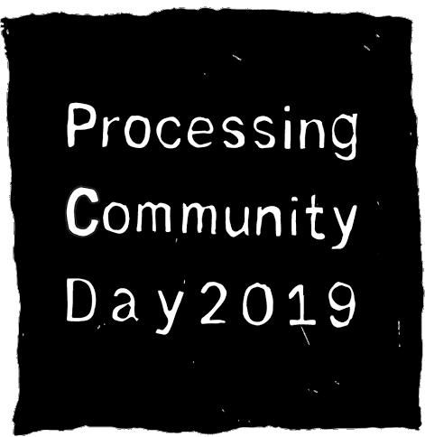
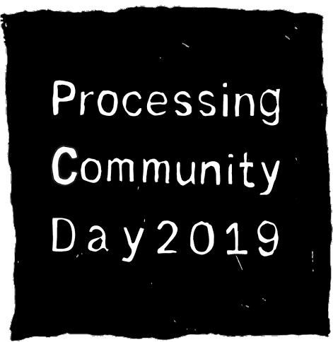

The Processing Foundation is currently accepting registration from communities around the world to organize a Processing Community Day in your own city. As a node organizer, you will help define the Processing Community at large by creating programming for your local community.
All registered organizers will receive an Organizer’s Kit, which includes a step-by-step organizing guide, promotion and tutorial packages. We will also support your event through our social media, and provide a platform for you to exchange experience and knowledge with communities around the world.
Interested in attending? Please join our newsletter to receive updates on PCD @ Worldwide sites near you.
Pick a date and time between January 15 and February 15, 2019 to host a Processing Community Day.
The duration can be as short as a two-hour programming tutorial, or as long as an all day event that includes workshops, discussions on network culture, or a show & tell on software art.
This is an open question depending on your local culture and what you have access to, but generally we recommend collaborating with public facilities such as libraries, schools, or community-driven spaces with good, stable Wi-Fi such as community centers, art / culture venues, hackerspaces, cafes, tea houses, or bars.
Please use the hashtag #PCD2019 when posting on social media so that we can help promote your event.
The Processing Foundation is currently gathering a list of PCD node organizers around the world through online registration. Registration is important as it helps us keep you posted with useful organizing information and materials, as well as connecting you to other parts of the Processing Community.